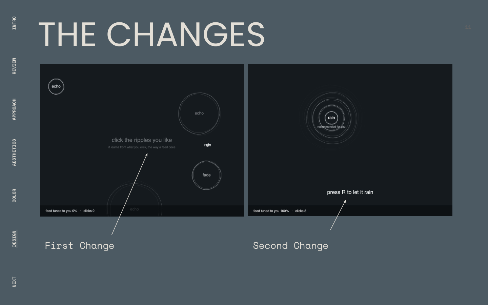
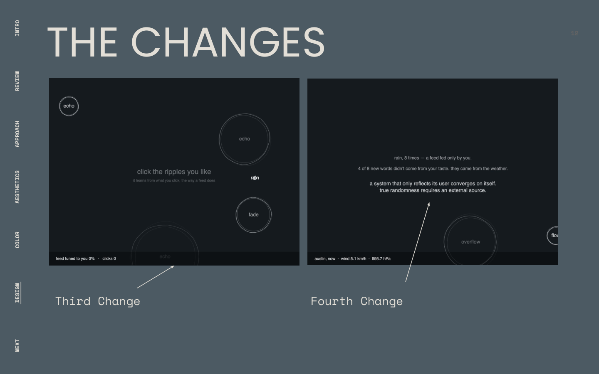

Discursive design
Ripple
A pond that rains words, learns what you click, and narrows like a feed until live Austin weather breaks it open.
Final product
The finished piece shows the closed loop first, then the interrupt. Words fall, clicks teach, the pond narrows, then weather reseeds the sequence from outside.
Click words to teach the pond. Press R once the feed narrows to hand control to live Austin weather.
TL;DR
A system stuck inside its own rules can only shuffle what it is given. It cannot create anything new until something from outside interrupts it.
I built an interactive pond that rains six words, learns from clicks the way a feed does, then hands control to live Austin weather.
A discursive piece whose mechanism is meant to be felt in play. Critique feedback shaped four clarity changes so people could reach the weather shift.
Context and challenge
Ripple sits in James Bridle's argument from Ways of Being: a computer can only shuffle what you already gave it. It cannot bring in anything truly new on its own.
The pond rains words: drift, fade, rain, flow, dissolve, echo. Click a word and the system raises that word's weight and nudges new ripples toward where you clicked. Do this enough times and the pond stops scattering words. It clusters them, repeats the same word, and leaves less to discover. That is a recommendation algorithm reduced to six words and one personalization value.
You click on words the way you'd click on a post, and watch the pond slowly learn what you like. The point is to feel that happen, not read about it afterward.
Goals
- Make a learning feed visible as a pattern of words appearing, clustering, and repeating.
- Keep enough ambiguity for discourse without losing the moment people recognize the mechanism acting on them.
- Let live weather shape behavior, not sit on screen as decorative data.
Research and insights
The reading set the argument. Class critique and sticky-note feedback tested whether people could feel it.
Closed systems only reshuffle
Bridle's point landed in the first version: the sketch picked random words on a timer. Nothing was connected to the sky, so nothing new could enter.
Ambiguity helped discourse, then stalled recognition
Feedback called the vagueness good for projection. The same vagueness blocked people from noticing that their own clicks were teaching the pond.
Most people never reached the weather half
The "press R" prompt was small, gray, and tucked in a corner. Almost nobody found it, so almost nobody reached the part where control passes outside the system.
Ideation and structure
I chose the ripple because its weakest moment doubled as its clearest argument. An early version dropped a new word every forty frames at a random position from a fixed list, on a strict interval, like a metronome. That mechanical sameness looked like a flaw next to the plant garden and the sundial. A closed system imitating an open one is supposed to feel mechanical underneath.
I picked the sketch that was honest about its own limits over the two that looked more finished, because the goal was a reaction, not polish alone.
How the pond learns
Words rain
Six words fall across the screen: drift, fade, rain, flow, dissolve, echo.
Clicks teach
Each click raises a word's weight and pulls new ripples toward that point.
The feed narrows
Personalization climbs. Words cluster. The same word returns more often.
Weather takes over
Live Austin wind, pressure, and precipitation reopen the system from outside the code.
Process
Frames from the deliverables PDF that track early sketches, the black-field draft, and pattern as process.
Click a page to zoom and pan.
Full process PDF
Full deliverables PDF. Open in a new tab if the embedded viewer is unavailable.
Design decisions
A plain black field instead of a scenic pond
The decisionMy first instinct was a pond with horizon and depth, then a flat teal that was meant to read as sky in water. Both read as decoration. I moved to near black, closer to a pond at night where you cannot see the bottom.
WhyYou cannot see into a personalization algorithm's internals either. You only see what it surfaces. A pretty photo would have hidden that.
Make the mechanism stated, not only inferred
The decisionThe opening line now pairs with a quieter second line: it learns from what you click, the way a feed does. Once clicks pull the cluster far enough, new words near that point are tagged "recommended for you."
WhyCritique showed people liked ambiguity for discourse, but could not tell the ripples responded to their clicks rather than a generic timer. Recognition had to arrive before interpretation.
Weather as structure, not a label
The decisionAfter a class session with Tega Brain, I tied behavior to live weather over Austin. Wind speed sets the interval between ripples. Precipitation compresses that interval when it is raining. Wind and pressure together seed the random number generator through randomSeed.
WhyPrinting wind speed as on-screen decoration would have stayed cosmetic. Seeding the sequence from the sky means rain mode is no longer determined only by the sketch's own code.
Critique changes
Four changes came directly out of critique. Each answered a specific note about clarity.
- Recognition. Added the quieter line under the opener so the learning mechanism is stated.
- Visibility. Moved "press R" from a small gray corner prompt to a centered, larger, pulsing cue once personalization crosses ninety percent.
- HUD contrast. Put the readout on a dark, semi-transparent bar so it reads as information, not faint decoration.
- Feed language. Tagged clustered words "recommended for you" so the sketch labels what a real feed is doing.
Each change was about calibration: how much clarity a discursive piece needs before useful ambiguity becomes confusion.


Results and impact
I only got three sticky notes, so either few people reached the computer or the concept needed clearer framing. Much of the written feedback landed on aesthetic, not substance.
A longer conversation mapped the experience into six stages: encounter, inspect, recognize, decipher, interpret, reflect. Ambiguity helped encounter. It broke recognize. People could not tell the ripples answered their clicks, so deciphering stalled before interpretation. The hidden weather prompt meant most viewers never reached the half of the piece that completes the argument.
One note called the vagueness good for discourse without using that term. That is a discursive strategy working as intended: ambiguity gave people room to read their own meaning into it.
Reflection
What I learned
- Showing the mechanism can say more than explaining it, but only if people can recognize that the system is responding to them.
- Outside data only supports the argument when it changes behavior, not when it appears as a cosmetic label.
- Discursive ambiguity needs a floor of clarity. Without that floor, people praise the look and miss the trick.
What I would do next
- Add a muted looping hero video of the full arc and stills of the narrowed versus open pond.
- Keep testing whether the weather interrupt is discoverable without over-explaining the piece.
Musical Molecules